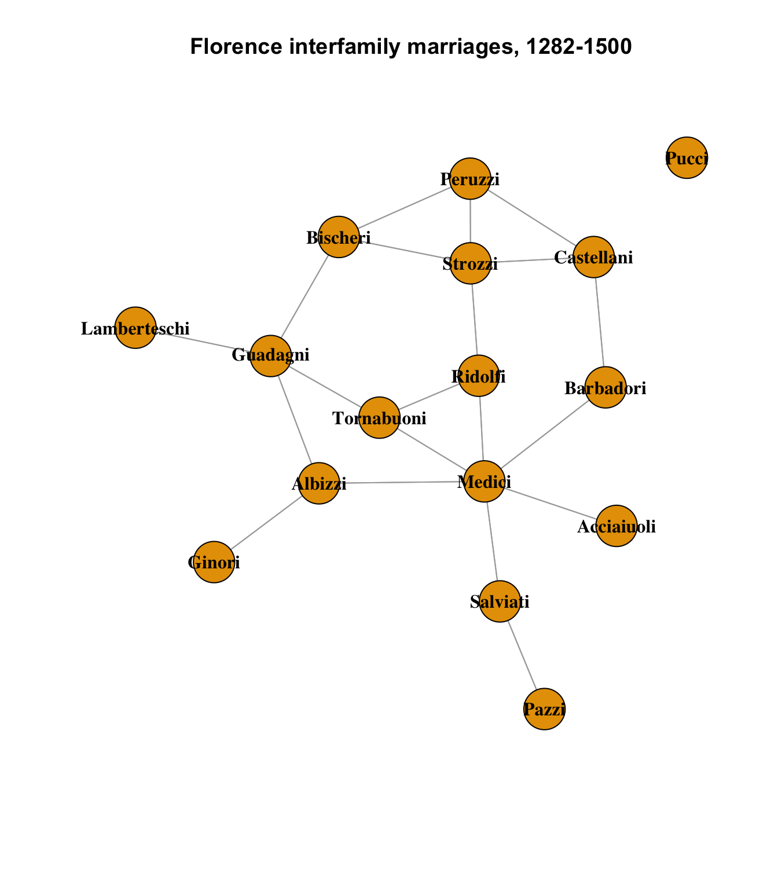
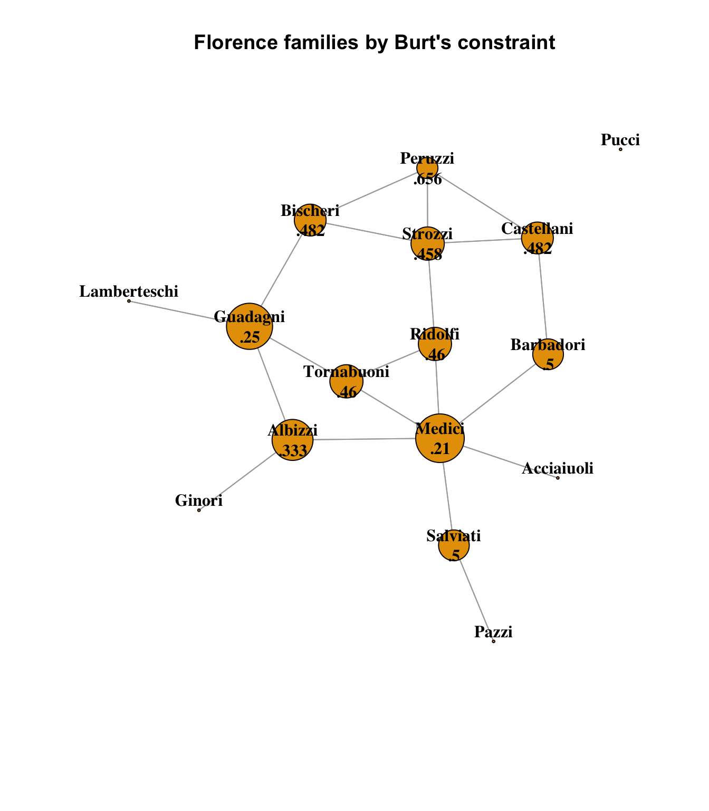

data("florentine", package = "ergm")
ntwk_stat <- flomarriage
data(flo)
ntwk_ig <- graph_from_adjacency_matrix(flo)Homework 5: Constraint and Brokerage in the Florentine Wedding dataset
r
social networks
Examining additional centrality measures in the Florentine network
Building on last week’s look at basic network centrality attributes in the Florentine Wedding dataset, we’re going to look at two new measurements of centrality: brokerage and constraints.
(Note: these two concepts begin to break the “use either one” conclusion when choosing statnet or igraph; brokerage is a function of statnet, and constraints are a function of igraph.)
ntwk_ig.nodes <- data.frame(
name = V(ntwk_ig)$name,
totdegree = igraph::degree(ntwk_ig, loops = FALSE),
indegree = igraph::degree(ntwk_ig, mode = "in", loops = FALSE),
outdegree = igraph::degree(ntwk_ig, mode = "out", loops = FALSE),
eigen = centr_eigen(ntwk_ig, directed = T)$vector,
bonanich = power_centrality(ntwk_ig),
centr_clo = igraph::closeness(ntwk_ig),
centr_btw = igraph::betweenness(ntwk_ig, directed = FALSE),
# igraph only
burt = constraint(ntwk_ig)
)
# Network-level measures:
# closeness centralization
ntwk_ig.centr_clo = centr_clo(ntwk_ig)$centralization
# betweenness centralization
ntwk_ig.centr_btw = centr_betw(ntwk_ig, directed = FALSE)$centralization
ntwk_stat.nodes <- data.frame(
name = ntwk_stat %v% "vertex.names",
totdegree = sna::degree(ntwk_stat),
indegree = sna::degree(ntwk_stat, cmode = "indegree"),
outdegree = sna::degree(ntwk_stat, cmode = "outdegree"),
eigen = sna::evcent(ntwk_stat, ignore.eval = TRUE),
bonanich = sna::bonpow(ntwk_stat),
centr_clo = sna::closeness(ntwk_stat, gmode = "graph",
cmode = "suminvundir"),
centr_btw = sna::betweenness(ntwk_stat, gmode = "graph")
)
# Network-level measures:
# closeness centralization
ntwk_stat.centr_clo = sna::centralization(ntwk_stat.nodes, sna::closeness,
mode = "graph")Warning in geodist(dat, count.paths = FALSE, predecessors = FALSE, ignore.eval =
ignore.eval): NAs introduced by coercion# betweenness centralization
ntwk_stat.centr_btw = sna::centralization(ntwk_stat.nodes, sna::betweenness,
mode = "graph")Warning in fun(dat, g = g, gmode = mode, diag = diag, ...): NAs introduced by
coercion# Statnet-only: Gould-Fernandez Brokerage
# temp <- data.frame(brokerage(ntwk_stat, cl = ntwk.nodes$orgtype5)$z.nli)
# ntwk.nodes <- ntwk.nodes %>%
# mutate(broker.tot = temp$t,
# broker.coord = temp$w_I,
# broker.itin = temp$w_O,
# broker.rep = temp$b_IO,
# broker.gate = temp$b_OI,
# broker.lia = temp$b_O)Burt’s constraint
Burt’s constraint can be thought of as a measure of a node’s dependency on other nodes for connections or information. If a node has a small number of connections, or the connections are largely redundant (i.e. a small group of friends without many other connections), that node has a higher constraint than one that has connections to nodes that are less redundant to each other. It provides more pathways, or opportunities, for information or power to flow.
It should come as no surprise, given all of the various ways that the Medici are the dominant node in this dataset, that the Medici family has the lowest overall constraint.
As a reminder, here is the original network graph of the Florence wedding data with no scaling applied:
set.seed(1235)
plot(
ntwk_ig,
layout = layout_components(ntwk_ig),
edge.arrow.mode = 0,
vertex.label.color = "black",
vertex.shape = "circle",
vertex.label.font = 2,
main = "Florence interfamily marriages, 1282-1500"
)
And here we scale the nodes by their Burt’s constraint measure:
ntwk_ig_b <- ntwk_ig
ntwk_ig_b.nodes <- ntwk_ig.nodes
ntwk_ig_b.nodes$burt <- ifelse(is.na(ntwk_ig_b.nodes$burt), 1, ntwk_ig_b.nodes$burt)
ntwk_ig_b.nodes$burt_inv <- 5 * (1 - ntwk_ig_b.nodes$burt)
V(ntwk_ig_b)$size <- ntwk_ig_b.nodes[,"burt_inv"] * 5
V(ntwk_ig_b)$label.cex <- ntwk_ig_b.nodes[,"burt_inv"] / 4
V(ntwk_ig_b)$label.cex <- pmax(V(ntwk_ig_b)$label.cex, 1)
# Ensure minimum node size
V(ntwk_ig_b)$size <- pmax(V(ntwk_ig_b)$size, 1)
burts_labels <- sprintf("%s\n%s", V(ntwk_ig_b)$name,
# Omit leading "0" can't be done in sprintf
substr(as.character(round(
ntwk_ig_b.nodes$burt, 3
)), 2, 10))
set.seed(1235)
plot(
ntwk_ig_b,
layout = layout_components(ntwk_ig_b),
vertex.label = burts_labels,
edge.arrow.mode = 0,
vertex.label.color = "black",
vertex.shape = "circle",
vertex.label.font = 2,
main = "Florence families by Burt's constraint"
)
Once again, we see the clear dominance of the Medici family in this measure. Note that all of the pendant nodes (Lamberteschi, Ginori, Pazzi and Acciaiuoli) have maximal constraints of 1; they are completely constrained by their single connections, by definition. The Pucci family’s constraint is undefined, as it is a disconnected node.
The Medici have the lowest constraints of any family, being well-connected to other well-connected nodes with some spread among them. It is interesting to note that the Guadagni family is not far behind, though, at 0.25 to 0.21 for the Medici. They are connected to 3 well-connected nodes besides the Lamberteschi, and the Bischeri node in particular gives them indirect access to the Strozzi and Peruzzi nodes, besides the Albizzi and Tornabouni nodes that they share with the Medici. It can be seen from this that the Bischeri node is a strength for the Guadagni family in much the same way that the Barbadori node is a strength of the Medici.
Brokerage
With Gould-Fernandez Brokerage, we begin to look at the ways in which nodes mediate connections between other groups of nodes. This requires a directed network, since the direction of flow of access is a crucial aspect of the core concept. There are five roles recognized by Gould-Fernandez Brokerage:
- Coordinator
- mediates contact between two individuals from his or her own group
- Itinerant broker
- mediates contact between two individuals from a single group to which he or she does not belong
- Gatekeeper
- mediates an incoming contact from an out-group member to an in-group member
- Representative
- mediates an outgoing contact from an in-group member to an out-group member
- Liaison
- mediates contact between two individuals from different groups, neither of which is the group to which he or she belongs
Unfortunately for the present moment, however, we cannot apply this concept to the Florence wedding data set, because at present there are no subgroups or categories between which to identify brokers! We will need to add data to the set to find a basis for this sort of analysis, and this is where we begin to transition to a research project.
I am interested in the patronage system in Renaissance Florence, particularly as it applied to artists and scientists, as a measure of influence of the families. We may be able to return to brokerage concepts once we map in data related to this concept.